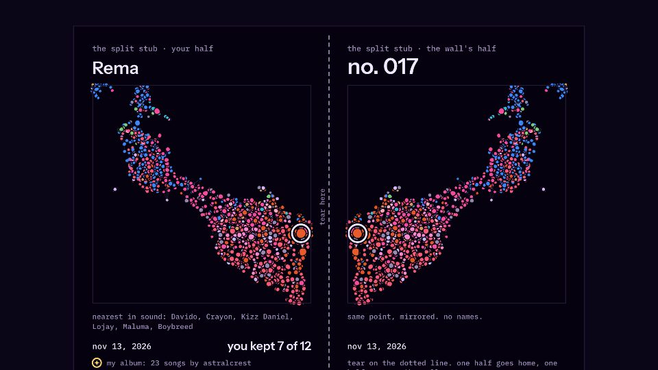
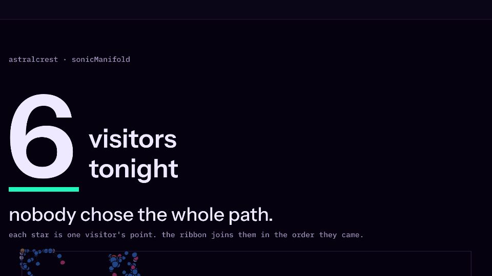
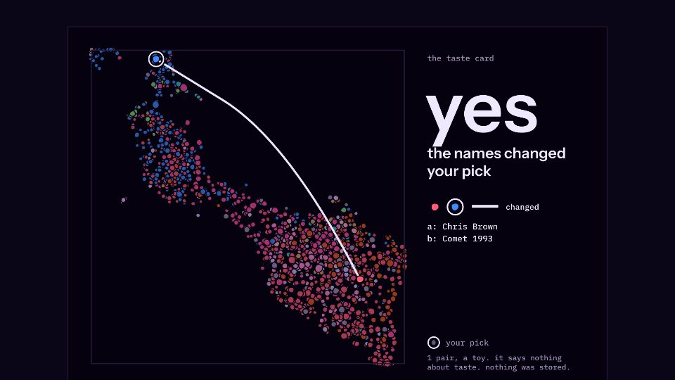
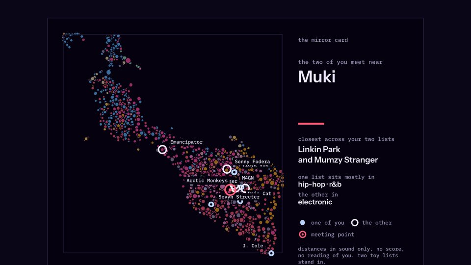

1A6, or 62 mm tape
2A4 portrait, letter works
34 x 6 in card
44 x 6 in card- 5your hand vs the machinean 80 mm slip: your path beside a toy rule's, how many steps were its picks, and a QR that reopens it.
for the laptop at the wall
the samples use made-up inputs. each page reads its own inputs from the address after the #. nothing is stored.